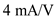
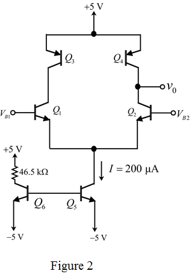
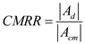

Step 1:
Refer to Fig. 8.37(a) representing active-loaded bipolar differential pair in the text book.
The formula for transconductance of an active-loaded bipolar differential pair is,
Substitute for  ,
,  for
for  and calculate the current flowing in the current source,
and calculate the current flowing in the current source,  .
.
Thus, the current flowing in the current source is .
Step 2:
Replace the current source with the current mirror circuit using transistors as shown in Figure 1.
Step 3:
The formula to calculate the resistance,  using ohm’s law is,
using ohm’s law is,
Substitute  for
for  ,
,  for and
for and  for .
for .
Step 4:
Draw the complete circuit with component values is as shown in Figure 2.

Step 5:
The formula to calculate the resistance

is,

Substitute  for
for  and
and  for
for  .
.
Step 6:
The formula for the differential resistance is,
Substitute  for
for  and
and  for
for  .
.
Thus, the differential input resistance,  is .
is .
Step 7:
Consider the circuit shown in Figure 3 to calculate the output resistance.
Step 8:
Formula for is,
Substitute  for
for  and
and  for
for  .
.
Step 9:
The formula for the output resistance  is,
is,

Substitute  for
for  .
.
Thus, the output resistance,  is
is  .
.
Step 10:
Calculate the open circuit voltage gain.
Substitute  for
for  and for
and for  .
.
Thus, the open circuit voltage gain is .
Step 11:
Calculate the input bias current.
Substitute  for
for  and
and  for
for  .
.
Thus, the input bias current is .
Step 12:
The maximum common-mode input voltage is,
Substitute for  ,
,  for
for  .
.
Thus, the maximum common mode input voltage is  .
.
Step 13:
The minimum common-mode input voltage is,
Substitute  for
for  ,
,  for and
for and  for
for  .
.

Thus, the minimum common mode input voltage is .
Step 14:
Calculate the resistance of the current source ,  .
.
The equation of the common mode gain is,
Substitute  for
for  , for and
, for and  for
for  .
.
Thus, the common mode gain,  is .
is .
Step 15:
The ratio of open circuit voltage gain to common mode gain represents the common mode rejection ratio.
Thus,

Substitute for  and for
and for  .
.
Thus,  is .
is .